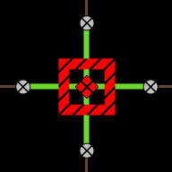
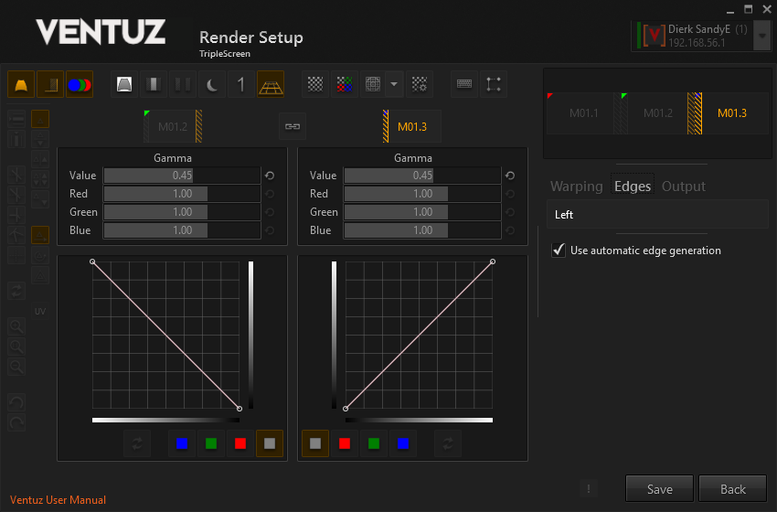

Warping and Soft-Edging
Table of Contents
- Ventuz Configuration
- Machine Configuration
- Introduction to the Video Engine
- AV Configuration
- Render Setup Editor
- Warping and Soft-Edging
When the displays in a render setup are video projectors, the following problems need to be solved:
- Warping: If the screen is not 100% parallel to the projector, the screen is curved, or the projector has a notable lens distortion, the outputs must be warped to compensate for that.
- Soft-edging: If two projectors are put next to each other to project on a larger screen, the projectors need to be set up with overlap to get rid of cracks between the projections. In such cases, both images must be "crossfaded" correctly so that the overlap is unnoticeable.
Both of these taken together is what we call Shaping.
High-end projectors often have hardware to do this, but sometimes this is insufficient or comes with an inefficient user interface, or it is just too expensive.
One should avoid warping if possible. Any correction that can be done optically or by positioning the projectors better is superior, since warping (regardless of with hardware or with Ventuz) will slightly blur the image. Also, when doing warping, one should either only warp in hardware or in Ventuz, otherwise the image gets slightly blurred twice.
Creative use of warping leads to projection mapping. Features like multiple warp groups per output, UV editing and 3D projection are designed to allow projections on irregular surfaces.
New Features as of Ventuz 4.05.00:
When familiar with Ventuz 4 shaping it might be best starting to revisit our updated introduction
Then look at the new features linked here:
- Multiple warp-groups with UV-Boundaries
- Perspective correct keystoning and 3d mapping for warp-groups
- UV-Editor
- Smart-mode to simplify editing groups of control-points.
- Rotating and scaling of control-points
- Mirror-modes for editing control-points
- Improved handling of keyboard focus.
- and more (1) (2) (3) ...
You can shape/warp the whole multi-machine Cluster if you select the according group in the Ventuz Configuration Editor and then open the RenderSetup editor!
The Ventuz Shaping Engine
This is an overview about the capabilities of the shaping engine. A detailed description of all the features and the user interface follows.
After a Render Setup has been created that defines the placement of the outputs (projectors or displays in a video wall) and the overlap / bezel between them, the Shaping Editor can be used to set up warping and soft-edging. Both Render Setup and Shaping Editor are part of the Ventuz Configuration Editor
The shaping engine is part of the Ventuz Runtime/Presenter. The Shaping Editor can activate warping and soft-edging, and then edit all parameters and grids in real-time. Usually one would use a small laptop to run the Shaping Editor and connect over network to the Ventuz Presenter or cluster of Presenters. Most common operations while editing can be done with keyboard only, and a user interface overlay can be switched on in the Presenter. This lets you shape while looking at the projection, not the laptop's display.
Warping is done by defining a grid. By default, a 2x2, 3x3 and 5x5 grid are automatically created, called Layers. All layers together are called a Group. It is possible to add additional layers if more control is required, or to add new rows and columns to an existing layer.
The finest layer will be used to create a mesh that does the actual distortion. The coarser layers are used to modify the finer layers. It is possible to switch freely between the layers and do coarse corrections even after fine-tuning was done without losing work done on any other layers.
When rendering a mesh, the texture is linearly interpolated, while the control grid uses Bézier splines to interpolate. So it is not good enough to just use the finest layer as base for warping, within Ventuz adaptive tesselation is applied until the error is below a certain threshold.
The whole warp-group can be rotated in 3d space to compensate keystoning or create projection mappings. This will create precise perspective distortion. Using the warping grids and Bézier splines, perspective distortion can only be approximated, possibly requiring very fine grids if the image is tilted a lot.
For projection mappings one can define multiple warp groups. Each group has it's own 3d rotation, UV-boundaries and multiple warp layers.
For projection mapping, the UV coordinates can be edited the same way as the control points positions. This is only possible on the finest layer. In addition, the UV-boundaries can be changed on the coarsest level.
Soft-Edging is done in the same way. In a simple 3 projector setup, the middle projector will have two groups, one for the left edge and one for the right edge. These groups have only one layer by default, and for simple setups it is rarely needed to edit the control points. But when projecting on irregular screens the ability to have multiple layers with a high number of control points comes in handy.
For each edge individually, the ramp can be controlled by gamma values and a spline when more control is required. Both gamma and spline are available as a combined value and separate red, green and blue values. All gammas and splines are combined and can be used simultaneously.
The ramps are internally calculated with 16 bit precision. Projectors of course don't support such quality, and in some conditions banding is visible in the ramps. Dithering can be enabled to re-gain some of the internal precision, which usually solves any notable banding.
For each output, a simple Color Correction with lift and gain is available. Gain will make the image brighter or darker, without changing the black level. This is done by multiplying the RGB values with the gain. Lift will change the black level. This is done by adding to the RGB values before applying gain.
A Test Pattern Generator can be used to generate various test patterns that can be useful while shaping. Additional images can be provided by the user. As the shaping is done with the presenter running, the actual Ventuz scene for the event can be loaded, or Ventuz can be used to construct additional test scenes.
So to summarize:
For each Warping and Soft-Edging, Groups can be defined to create meshes for warping and gradients for soft-edging. Each group can have multiple Layers, where the finest layer is used to create the mesh or texture and the other layers can be used to deform the finest layer.
Performance Considerations
Shaping is not for free, but should rarely be a problem.
Totally disabling shaping is, of course, the fastest.
The performance of warping depends on how fine the warping mesh is tesselated. This can be checked with the Show Wireframe option. On modern GPU's this will rarely be a problem.
Soft-edging will impact the speed of Ventuz only a little, and that impact is independent of the number of edges. Only while changing the edges with the editor, recreating the edge-texture might be notable of course.
Shaping with the Ventuz Designer
When running the Ventuz Designer instead of the Ventuz Presenter, shaping is only active when the Production Preview mode is enabled. This can be enabled by pressing CTRL 1 in the Designer.
The User Interface
Here a general overview of the user interface:
- Toolbar for global tools
- Toolbar with control-point related tools (side-bar)
- Output (projector or other display) navigation
- Switch between output settings, warping and soft-edging
- Group and layer navigation
- Group and layer related properties
- Toolbar with group and layer related tools
- Grid Editor
Many operations have keyboard shortcuts, so most of the work can be done without looking at the user interface on your computer monitor, but at the outputs directly.
Navigation
The output navigation (3) displays a schematic view of the outputs. It will not try to faithfully represent the actual size and position of the displays but indicates the general layout, like a subway map will not represent the actual distance between stations. For instance, overlap is not shown here.
To change the current output, either click or click and drag in this area or use cursor + alt keys to change the current output.
The area marked with (4) can be used to switch between warping and soft-edging. The output section contains color correction and other per-output settings.
The group and layer navigation allows to jump between groups and layers. Here are examples of two edging groups with one layer each, and a warping group with 3 layers.
With the keyboard, pressing 'W' or 'E' will cycle through the warp or soft-edge groups. Page up and down walk through the layers of the current group. The home key goes to the coarsest layer and the end key goes to the finest layer.
If you have multiple groups, SHIFT + Page Up / Down will select groups and ALT + Page Up / Down will move the current group up or down.
Global Toolbar
These buttons control various global settings.
These settings will affect the presenter / cluster even after the render setup has been left:
| Nr | Name | Description |
|---|---|---|
| 1 | Enable warping | If this is disabled, the whole warping engine is disabled |
| 2 | Enable soft-edging | Disable only soft-edging. Usually one would switch off the edging until warping is done. |
| 3 | Enable color correction | Disable only color correction. Quickly disabling and re-enabling color correction can be used to check the effect of color correction |
These settings are only effective while using the shaping section of the render setup:
| Nr | Name | Description |
|---|---|---|
| 4 | White background | Fill the unused pixels of an output with white instead of black. This shows how many pixels are wasted because of the warping. |
| 5 | Highlight overlap areas | Sometimes it is useful to highlight the areas where the outputs overlap because precise warping here is especially important. |
| 6 | Cut soft-edges | This will cut the soft-edges in a way that the output of the two sides directly touch but not overlap. This is useful to check how well the outputs match colors. This requires that the warping has been done already. |
| 7 | Darken rendering / test image | Sometimes the user interface overlay is hard to see over a bright rendering or test pattern. This button will darken the background to remedy this. |
| 8 | Solo Mode | Like in an audio mixer, this disables all other outputs. Useful when there is confusion which output contributes to what. Also, the test pattern will center to the solo output. |
| 9 | 3D-Projection in Editor | Enable / Disable the effect of the 3d projection in the shaping editor. It is a matter of taste what to prefer. 3D-Projection is always enabled on the outputs. |
| 14 | Show keyboard shortcuts | Most users prefer to do as much as possible with the keyboard alone. This option aids in memorizing the keys. |
| 15 | Screen GUI options | Control extent and size of the user interface HUD provided on the outputs. |
These test pattern related options are effective while in either part of render setup:
| Nr | Name | Description |
|---|---|---|
| 10 | Enable test pattern | Enable test pattern. In the editor, the test pattern is always shown. The presenter can show either test pattern or the Ventuz scene. |
| 11 | Multiply output color | Each output is assigned a color. This will multiply the test pattern foreground color with the output color. If good colors are assigned to the outputs, this helps to identify outputs and figure out which of two overlapping outputs needs warping and which is correct. |
| 12 | Select test pattern | There are many useful test patterns programmed already. If they are insufficient, user images can be used as test patterns. |
| 13 | Test pattern options | Most test patterns have a range of options to configure the width and distance of lines or the colors. |
Test Patterns
Most test patterns are self-explanatory, but some test patterns have options that need explaining.
Most test patterns offer a foreground and a background color. Also each output can be assigned a color. By pressing the Multiply output color icon in the global toolbar, the foreground color will be multiplied with the output color. For this to work, it is best to choose a bright color as the foreground color.
The various grids and lines can be animated with the Speed parameter. Using slow moving diagonal lines is good for finding subtle warping irregularities.
By default grid and checker test patterns will not perfectly fit, the last row and column will be cut off. By pressing Fit corners, this will be corrected, at the price that the aspect ratio is not guaranteed to be 1:1.
The image test pattern allows you to specify a directory that contains any pictures you prefer as test patterns. It is important that all presenters in a cluster and the computer that runs the shaping editor have the images on the exact same path. Using a network share is the simplest way to ensure this. If the image could not be loaded, a dummy image with color gradients is generated. The files in the directory are filtered for common image file types, like bmp, png, gif, tif, tga and jpg.
By pressing '-' and shift '-' can be used to toggle certain options in other test patterns:
- In the color and gray ramps, '-' toggles between gradient and bars.
- In the color ramps, shift '-' toggles between rainbow and standard bars.
- In grid and checkers, '-' toggles the fit corners option.
- In image test pattern, '-' and shift '-' cycle through the images in a directory.
Editing the Grid
Warping and soft-edging both use grids of control points, creating a Bézier-surface.
Selection
The color of the control points has the following meaning:
- Gray: not selected
- Orange: selected.
- Red: current cursor position, also selected.
- White: The mouse is hovering over the selected control point.
To select points, left-click on them. Pressing shift while doing so will add to the selection. When clicking beside the points, a rectangle is drawn as the mouse moves, and the points in the rectangle are selected. Again, pressing shift while doing so will add to the selection.
Pressing CTRL A will select all points, CTRL D deselects all points except the control point where the cursor is. The cursor can not be hidden and the control point at the cursor is always selected.
In addition to the primary control points at the cross-sections of the grid, there are control handles for finer control over the mesh. These are only visible, and can only be clicked on when the associated primary control point is selected.
When working with the keyboard, using the cursor keys will move the cursor, and the cursor is also selected. Pressing 'b' will enter box-selection mode, again use the cursor to change the box size. To move the cursor to a control handle, use cursor keys + CTRL.
Mirror Modes
The mirror modes simplify symmetrical editing. Available are horizontal, vertical and point symmetry, as well as horizontal and vertical symmetry combined, available as buttons on the toolbar. Pressing O cycles through the mirror modes, SHIFT + O switches mirroring off.
Editing
The control points can be moved with the mouse just as they are selected, that is or + SHIFT. Holding CTRL while moving the mouse will limit the movement to either the x or y axis. This works by pressing CTRL before or after clicking . To move the points with the keyboard, use the Cursor keys + SHIFT.
By default the editor is in translate mode, moving control points works as expected. With the toolbar or by pressing SHIFT S or SHIFT R, the editor can be switched into Scale or Rotate mode. With this, a group of vertices can be scaled or rotated.
For a warping layer, there is a way to move a control point without warping the image. This allows to move a point to a feature of the projection screen, and warp from there. With the mouse, use + CTRL. With the keyboard, use Cursor + SHIFT + CTRL. Before doing this, consider using the UV Editor, in most cases, it is more precise and intuitive.
Smart Mode
Smart Mode is good to edit a rectangular selection of vertices. It is done by first making a selection, and then pressing SHIFT and ALT while moving control points either with mouse or cursor keys.
If corner or edge control points are moved, all selected control points will move along, in a proportional manner:
Here we have selected all control points and move the lower-right corner:
Now we select the right half of control points and move the edge towards the middle:
Smart Mode is best explained with rectangular selections, but it will work with selections of any shape. The definition of what is an edge or a corner depends on the limits or bounding box of the selection. With a selection containing no corners, smart mode is of limited value.
UV Editor
By default, the control points are mapped to evenly spaced locations of the content (or test image). So if you have a 5x5 grid and your test pattern is a 4x4 checkerboard, each control-point is directly bound to one of the intersections:
By pressing SHIFT U or using the toolbar, the UV-Editor-Mode can be entered or left. Control points and cursor are painted with a hashed pattern so that it is easy to notice if this mode is on or not. UV editing is only available for the finest layer of a warp group. It will deactivate when switching to edge groups or any other layer than the finest.
In UV mode, we see the unwarped content and can change what part of the content the control point is bound to:

Switching back to the normal mode, we see how the image is warped although the control points stay at their default position.
This can be combined with multiple warp groups and the UV Boundaries that can be set for each warp group to create complex projection mapping.
All control point editing features are available in the UV-Editor. For instance, one could select all control points and use the rotate and scale mode or smart editing to position them quickly and cleanly.
Summary
Keyboard
| Mouse | Keyboard | Description |
|---|---|---|
| Cursor | select point | |
| SHIFT Cursor | move selected points | |
| click on point | select only this point, then move | |
| SHIFT click on point | add point to selection, then move | |
| CTRL click | move only horizontally or vertically | |
| click not on point | B, then Cursor | box selection |
| SHIFT ALT click | SHIFT ALT Cursor | smart editing |
| CTRL click | CTRL Cursor | move without warping |
| | pan | |
| | zoom |
The Side-Toolbar
At the very left of the editor is a toolbar with buttons that help edit the grid.
| Nr. | Keyboard / Mouse | Descriptions |
|---|---|---|
| 1 | Insert row (right of cursor) | |
| 2 | Insert columns (below cursor) | |
| 3-7 | A U K L S | Handle Modes, see below |
| 8 | X | Reset selected points to default position |
| 9 | | Zoom in |
| 10 | R | Reset zoom and pan |
| 11 | | Zoom out |
| 12 | CTRL-Z | Undo |
| 13 | CTRL-SHIFT-Z or CTRL-Y | Redo |
| 14 | cycle with O, SHIFT O | Mirror Mode off |
| 15 | cycle with O | Mirror Mode Horizontal |
| 16 | cycle with O | Mirror Mode Vertical |
| 17 | cycle with O | Mirror Mode Horizontal + Vertical |
| 18 | cycle with O | Mirror Mode Point-Symmetry |
| 19 | Normal Control Point Movement (Translation) | |
| 20 | Toggle with SHIFT S | Scale |
| 21 | Toggle with SHIFT R | Rotation |
| 22 | Toggle with SHIFT U | UV Edit Mode |
| - | ESCAPE | Reset mirror, scale, rotate and multiselect |
Cursor Shape
The shape of the cursor helps identifying the mode you are in:
| Normal | Box Selection | UV Editor | UV Box Selection | |
|---|---|---|---|---|
| Translate (default) |  | |||
| Scale SHIFT S | ||||
| Rotate SHIFT R |
In UV-Mode, the cursors are hashed. The normal translate cursor is only shown on the projection, not in the warping tool.
Zooming and Panning
The grid editor can be zoomed with the mouse wheel and panned by dragging around with the middle mouse button. There are also zoom buttons on the left toolbar. Press the R key to reset to default zoom & pan.
Handle Modes
The color of the handles indicates how the handles behave and which constraints they enforce.
| Name | Color | Shortcut | Description |
|---|---|---|---|
| Linked | Green | A | Both sides have same direction and stretching |
| Straight | Yellow | U | Both sides have same direction, but can be stretched differently |
| Unlinked | Red | K | Both sides are completely independent, allowing for kinks and different stretching |
| Linear | Pink | L | Handles are automatically calculated for linear interpolation |
| Default | Brown | S | Handles are automatically calculated for maximum smoothness |
With most modes, the change of a handle is local and affects only the area of the surrounding 3x3 control points. In default mode, the change affects a 5x5 surrounding. This mode is useful for the 2x2 and 3x3 layers where this does not matter.
To change the mode, select a handle and press one of the handle mode buttons. Alternatively, use the keyboard shortcuts in the table above. In both cases, when selecting a primary control point, both horizontal and vertical handle mode are set.
In default mode, the handles are calculated automatically. When trying to move a handle in default mode, it automatically switches to linked mode to allow editing.
Insert Rows and Columns
To insert a row or column in the finest layer, Select a primary control point and press the insert row or insert column button. The new row or column will be inserted to the below or to the right of the selected point. Therefore, the option is disabled if selected point is in the rightmost column or the bottommost row.
Please note that the handle modes are changed by this action: when inserting a single row into a 5x5 grid, the distances between the rows is different and the linked handle mode can not be used anymore, it is automatically changed to straight where that is required.
The subdivide-feature explained below does not suffer from this as it inserts rows and columns everywhere, uniformly.
Manipulating Layers and Groups
More buttons are at the lower-right part of the user interface:
- Adds a new group.
- Adds a new layer. If the new layer is finer than the finest layer, it will become the new finest layer. Some editing done to the finest layer may be lost. It is best to subdivide the current finest layer once substantial editing has been done.
- Allows renaming the layer.
- Removes the selected group.
- Removes the selected layer. If the layer is not the finest layer, no editing is lost by this, as the finest layer holds all the information for creating the mesh.
- Move current group up (ALT Page Up)
- Move current group down (ALT Page Down)
- Reverts the whole group to default.
- Creates all soft edges, or reverts them to default when they already exist. Press this when the overlap has been changed in the render setup.
The finest allowed layer is 33x33 points.
Subdivision
By pressing the '+' icon in the layer navigation, the finest layer can be subdivided in X, Y or both. This will insert a row and/or columns between every existing pair of rows/columns: a 5x5 point grid turns into a 9x9 point grid.
As 33x33 is the finest allowed layer, any layer with more than 17 points either horizontally or vertically can not be subdivided anymore.
Subdivision is the most precise way to add more control points, as all other methods are worse at capturing detail in the new, finer layer.
One could consider a 5x5 point grid is a 4x4 square grid, and every square gets sliced in half horizontally and vertically, resulting in an 8x8 square grid, or a 9x9 point grid.
Multiple Warp Groups
One can have multiple warp groups per output. They are independent of each other, but share the same color correction and are drawn in the bottom to top order. If the warp groups overlap, use the toolbar or the ALT key and Page Up / Down to change the order. Pressing E will cycle through the groups.
Soft-Edges
There are two modes for creating soft-edges. Automatic mode and manual mode. Automatic mode will be sufficient for projections on semi-planar surfaces. When doing 3d projection mapping, the soft edges might become very irregular, and manual mode might be required.
Automatic mode is enabled by default and can be disabled in the Edges section.
The gamma values
The ramps for soft-edging execute the following functions in this order:
- Apply the white spline
- Apply the separate red/green/blue splines
- Apply the gamma value
- Apply the separate red/green/blue gamma values
This allows you to roughly adjust the gamma, and then use the spline editor to fiddle with the ramp until it is satisfactory.
Each ramp (or group) has its own set of gammas and splines.
This is the same for automatic and manual mode, even though the user interface differs.
Spline control points are inserted by clicking on the spline itself. They can be moved by clicking on them and dragging them. Moving a control point next to another control point removes it.
The buttons below switch between the splines for white, red, green and blue, and revert the spline to default.
Automatic Mode
In automatic mode, the shape of the edges can not be changed. If the warping is correct, this should not be required.
The output navigation will show the edges. By clicking on an edge, an editor window will open up and allow to edit gamma sliders and splines of both adjacent edges.

Manual Mode
Here the geometry of the edges can be edited just like a warping layer. It is possible to add more control points to the grid. Remember that the edges are also warped, which can be a bit confusing when editing edge-layers on the projection screen.
In manual mode, only one edge can be edited at a time.
Each point has an associated value, which is either 1 (white, image) or 0 (black). If more complex forms than simple edges are required, this value can be edited with a slider among the properties or by pressing the I and shift-I keys, setting the value to 0 or 1.
The spline editor for the ramps is started by pressing on the small splines next to the gamma sliders. This opens a bigger window.
Per Output Settings
The output category has the following properties:
Color Correction
| Name | Description |
|---|---|
| Gain | For color correction, a value that is used to multiply the rendering pixels |
| Lift | For color correction, a value that is added to the rendering pixels, before contrast is applied |
To change all 3 (red, green and blue) sliders at the same time, press the Alt key while dragging with the mouse. This will change the color values while trying to preserve the ratios between the colors, so brown will always stay brown and not become more and more pale-white as values increase.
Quality Settings
The Quality section mainly controls how fine the warping mesh is to be tessellated. The defaults are set for quite high quality, when using more precise values you should check for wasteful over-tesselation with the Show Wireframe option.
| Name | Description |
|---|---|
| Max Level | Maximum subdivision when creating the mesh from the finest layer |
| Position Error | Acceptable difference for the vertex positions between perfect Beziér interpolation and the actual mesh, in pixels |
| Mapping Error | Acceptable difference for the UV mapping between perfect Beziér interpolation and the actual mesh, in pixels |
| Ramp Error | Acceptable difference for ramp colors between perfect Beziér interpolation and the actual mesh, in color values ranging from 0 to 255 |
| Dither Mode | Enable dithering to improve ramp quality. Temporal dithering will change the dither pattern every frame, that usually gives better results but may result in undesirable artifacts. |
| Show Wireframe | Shows the wireframe of the warping mesh. Useful for checking if the level of subdivision is reasonable or insane. |
Enable / Disable Projector User Interface
When working with large or complex render setups, one might want to continue warping at one portion of the installation while another portion already operates.
The Projector Gui Enable button allows excluding some of the outputs from being affected by the shaping editor. Warping, Shaping and Masking are done as edited, but test patterns and the user interface is never drawn. The affected outputs are crossed out in the navigation.
Per Group Settings
Enable Warp Group / Alpha Blending
These options are especially useful when working with multiple warp groups on the same output.
Enable Warp Group is on by default. This allows to temporarily disable a warp group.
Enable Alpha This allows to use alpha blending when warp groups overlap. Since the alpha channel often contains garbage, this is disabled by default
UV Boundaries
This allows making a warp group use only a portion of the content. Numerical input is possible for entering precise values.
This is useful when using multiple warp groups.
The same effect can be achieved with the UV Editor. This is more convenient for moving the whole UV selection, while the UV Editor allows irregular warpings. Both methods can be combined.
3D projection
With these values set to default, the warping mesh is rendered straight on the screen, with no distortion.
3D projection allows a virtual camera to move around the warping mesh to get perspective correct projection.
All fields allow for precise numerical input.
Rotation will orbit the camera around the warp mesh.
Zoom will change the field of view.
Distance works like a vertigo slider: at the same time the distance is changed, the zoom is changed the other way around to preserve the size of the warp mesh. This will either exaggerate or minimize the effect of the perspective distortion.
Shift this will move the warp mesh around, while the camera stands still. Pan this will move the final image around, with no change in perspective.
Shift will move the warp mesh
Press ALT R to reset the 3D-Projection.